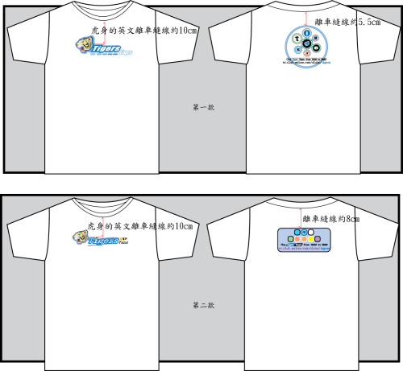
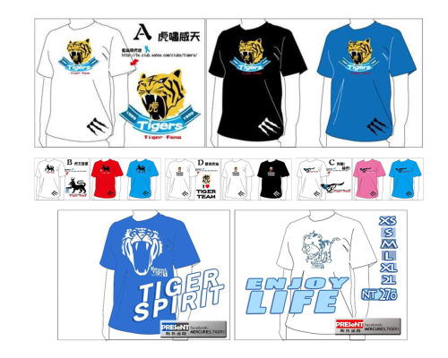
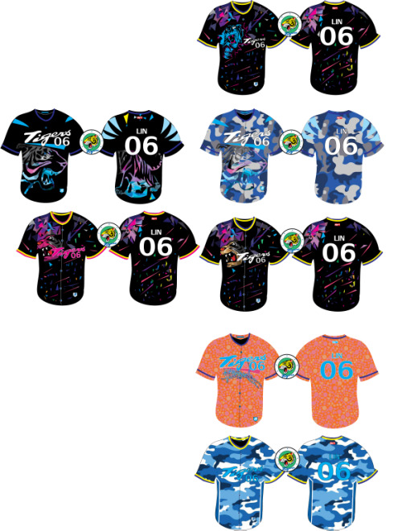
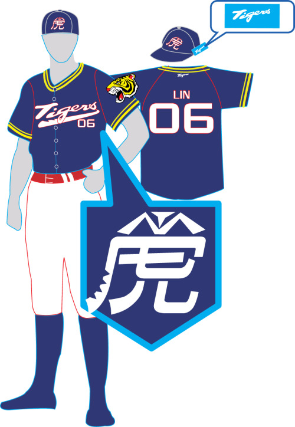

iTigre.com / TIGERS HISTORY
歡迎虎迷回來一聚
藍絲帶虎衣與相聚紀錄
一件虎 T、一套條紋球衣，或一次再見面的約定，都能留住與三商虎有關的記憶。這裡整理「飄揚在夜空中的藍絲帶」歷年服飾企劃與球迷活動，從設計圖、開箱影像，到台中、新莊、天母、龍潭與高雄的相聚，沿著衣著與人，接著往下讀。
本頁為歷史紀錄索引。舊款服飾、未發行企劃與過往活動均以回顧方式呈現，相關細節請見各篇原文。
歷代虎衣｜穿在身上的記憶
從早期虎 T，讀到條紋球衣與應援外套。沿著各代圖像，接著看對應企劃、成品開箱，以及同一時期的球迷故事。
-
2007
初代虎 T
從最早留下的虎 T 設計開始，回看虎迷如何把喜歡的球隊穿進生活。這一代的圖樣，也成為後續虎衣紀錄的起點。

初代虎 TTIGER TEE -
2010
二代虎 T
圖案、配色與文字有了更多變化，虎 T 也逐漸累積出不同時期的模樣。把這一代與後來的條紋球衣放在一起看，更能看見企劃形式的延伸。

二代虎 TTIGER SPIRIT -
2014
初代條紋球衣（三代）
白底條紋、胸前 Tigers 字樣與背號配置，讓復刻球衣成為一份能穿上身的紀念。從設計圖接著看歷史專頁與開箱影像，能把企劃與成品的樣子連起來。
初代條紋球衣（三代）PINSTRIPE -
2016
四代湛藍虎 T
虎頭圓標、藍色主體與紅綠線條，留下這一代虎 T 的辨識。對應的排汗 T 專頁保存了當時的企劃介紹，也能接著回看同年新莊 OB 的球迷身影。
四代湛藍虎 TBLUE EDITION -
2017
17 夢幻未發行企劃
未發行設計紀錄
這組圖樣以未發行企劃的身分留存，記下當時嘗試過的配色與視覺方向。若想把設計紀錄接回同年的球迷生活，可以繼續翻閱 2017 天母 OB 的相關貼文。

17 夢幻未發行企劃DESIGN ARCHIVE -
2018
客場樣・出征球衣（五代）
深色球衣、背號與整套搭配，留下客場樣出征球衣的設計。與前面的白底條紋球衣對照，可以看見不同時期的配色與應援想像。

客場樣・出征球衣（五代）AWAY JERSEY -
2021
續・序企劃
衣著記憶繼續延伸到應援外套。本段年份標記為 2021；相關圖像、企劃介紹與後續資訊，請接著閱讀 2022「續・序」應援外套專頁。
續・序企劃主視覺YEAR OF THE TIGER續・序應援外套SUDADERA
從企劃介紹，讀到成品開箱
想了解一件衣服背後的細節，從對應專頁開始，再接著看實際影像。
穿上虎衣之後，我們在哪裡相聚
沿著不同年份與地點，接回照片、環景影像、OB 聚會與球員見面會。以下均為過往紀錄。
再多讀一點｜相聚之後的心情
- 2023/12/2 三商虎球員見面會
和三商本部紀念專頁搭配閱讀，補上相聚當時的個人感受。
- 知道今天的活動，對你／妳有了某些程度的意義
從 2025 高雄同樂會的活動邀約，接著讀活動之後留下的話。
- 一篇報導，收進了我們走過的一小段路
從受訪心得，回看三商虎與藍絲帶記憶如何持續被保存。
歡迎虎迷回來一聚｜藍絲帶社群
歡迎前往「飄揚在夜空中的藍絲帶」Facebook 專頁，接著看虎迷的紀錄與分享。下方保留原有指定貼文；也可以直接開啟原文閱讀。